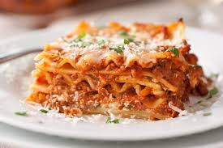

lasagna

Try this Fettuccine Alfredo (courtesy Bon Appetit) recipe
This is my favorite recipe to make. I really love how the flavors melt togther and there is just a hint of red sauce.
I ussually only make this for Christmas. Howver, i don't make it every year. But wehen I do, it is a big hit!
INGREDIENTS
Bolognese Sauce
- 1 large onion, coarsely chopped
- 1 medium carrot, peeled, coarsely chopped
- 1 celery stalk, coarsely chopped
- 2 tablespoons olive oil
- 1 pound ground beef chuck
- 1 pound ground pork
- 4 oz. pancetta (Italian bacon), finely chopped
- Kosher salt and freshly ground black pepper
- 1 cup dry white wine
- 1 cup whole milk
- 1 14.5-oz. can crushed tomatoes
- 3 cups low-sodium chicken broth, divided
Fresh Pasta Dough & Noodles
- 1/2 teaspoon kosher salt
- 3 cups all-purpose flour plus more
- 4 large eggs, room temperature
Bechamel
- 5 tablespoons unsalted butter
- 1/4 cup all-purpose flour
- 4 cups whole milk, warmed
- pinch of freshly ground nutmeg
- Kosher salt
Assembly
- Kosher salt
- Unsalted butter, room temperature (for dish)
- 2 cups finely grated parmesan
DIRECTIONS
Bolognese Sauce
- Pulse onion, carrot, and celery in a food processor until finely chopped.
- Heat oil in a large heavy pot over medium heat. Add beef, pork, pancetta, and vegetables; cook, breaking up meat with a spoon, until moisture is almost completely evaporated and meat is well browned, 25–30 minutes; season with salt and pepper.
- Add wine to pot and bring to a boil, scraping up browned bits from bottom of pot, about 2 minutes. Add milk; bring to a boil, reduce heat, and simmer until moisture is almost completely evaporated, 8–10 minutes. Add tomatoes and 2 cups broth; bring to a boil, reduce heat, and simmer, adding water by ½-cupfuls if sauce looks dry, until flavors meld and sauce thickens, 2½–3 hours.
- Let sauce cool, then cover and chill at least 12 hours or up to 2 days. (Letting the sauce sit will give it a deeper, richer flavor.)
- DO AHEAD: Sauce can be made 2 days ahead. Cover and chill.
FRESH PASTA DOUGH AND NOODLES
- CWhisk salt and 3 cups flour in a large bowl, make a well in the center, and crack eggs into well. Mix eggs with a fork, then slowly mix in flour until a shaggy dough forms. Turn out dough onto a lightly floured surface and knead, dusting lightly with flour if sticky, until smooth, about 5 minutes (it will be fairly stiff). Wrap in plastic; let sit until dough holds an indentation when pressed, 1–2 hours.
- Set pasta maker to thickest setting; dust lightly with flour. Divide dough into 4 pieces. Working with 1 piece at a time and keeping remaining dough wrapped in plastic as you work, flatten dough into a narrow rectangle (no wider than mouth of machine); pass through rollers. Fold dough as needed to fit and run through again. Repeat without folding, adjusting machine to thinner settings after every pass and dusting with flour if sticky, until pasta sheet is 1/16” thick (setting 8 on most machines). Place pasta sheets on a lightly floured surface and cut crosswise into 16 8”-long noodles.
- DO AHEAD: Dough can be made 1 day ahead; chill. Bring to room temperature before rolling out, about 1 hour. Noodles can be made 1 day ahead. Stack on a baking sheet with a piece of parchment paper between each layer. Cover with plastic wrap and chill.
Bachamel
- Heat butter in a medium saucepan over medium heat until foaming. Add flour and cook, whisking constantly, 1 minute. Whisk in warm milk, ½-cupful at a time. Bring sauce to a boil, reduce heat, and simmer, whisking often, until the consistency of cream, 8–10 minutes; add nutmeg and season with salt. Remove from heat, transfer to a medium bowl, and press plastic wrap directly onto surface; let cool slightly.
- DO AHEAD: Béchamel can be made 1 day ahead. Keep covered and chill.
Assembley
- Reheat the sauces. Combine Bolognese sauce and remaining 1 cup broth in a large saucepan over medium heat, and heat until sauce is warmed through.
- Meanwhile, if you made the béchamel ahead of time, heat in a medium saucepan over low heat just until warmed through (you don’t want to let it boil).
- Working in batches, cook fresh lasagna noodles in a large pot of boiling salted water until just softened, about 10 seconds. Remove carefully with tongs and transfer to a large bowl of ice water; let cool. Drain noodles and stack on a baking sheet, with paper towels between each layer, making sure noodles don’t touch (they’ll stick together).
- Preheat oven to 350°. Coat a 13x9” baking dish with butter.
- Spread ¼ cup béchamel in the prepared baking dish. Top with a layer of noodles, spread over a scant ¾ cup Bolognese sauce, then ½ cup béchamel, and top with ¼ cup Parmesan. Repeat process 7 more times, starting with noodles and ending with Parmesan, for a total of 8 layers. Place baking dish on a rimmed baking sheet and bake lasagna until bubbling and beginning to brown on top, 50–60 minutes. Let lasagna sit 45 minutes before serving.
- DO AHEAD: Lasagna can be assembled 12 hours ahead. Cover and chill. Let sit at room temperature 2 hours before baking. Cook, covered with foil until the last 20 minutes, then finish cooking uncovered.